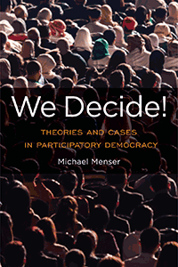

<body bgcolor="#FFFFFF" text="#000000" link="#0000FF" vlink="#CC0000" alink="#CC0000"><center><hr width="350" size="1" align="center" noshade>Argues that democratic theory and practice needs to shift its focus from elections and representation to sharing power and property in government and the economy<hr width="350" size="1" align="center" noshade><p><a href="https://cdcshoppingcart.uchicago.edu/Cart/ChicagoBook.aspx?ISBN=&&PRESS=temple" target="_top">Buy this book!</a> | <a href="https://cdcshoppingcart.uchicago.edu/Cart/Cart.aspx?PRESS=temple" target="_top">View Cart</a> | <a href="https://cdcshoppingcart.uchicago.edu/Cart/Cart.aspx?PRESS=temple" target="_top">Check Out</a></p><p></p></center><!--none//--><h1 class = "booktitle">We Decide!</h1> <h1 class = "subtitle">Theories and Cases in Participatory Democracy</h1>
<h3>Michael Menser </h3>
paper: $34.95, Jan 18<BR>EAN:&nbsp;978-1-4399-1418-2<BR><font color=#990033>Not Yet Published Preorder</FONT><font size=-7><br>&nbsp;</font></p><p class="info">cloth: $104.50, <BR>EAN:&nbsp;978-1-4399-1417-5<BR><font color=#990033>Not Yet Published Preorder</FONT><font size=-7><br>&nbsp;</font></p><p class="info">e-book: $34.95, <BR>EAN:&nbsp;978-1-4399-1419-9<BR><font color=#990033>Not Yet Published Preorder</FONT><font size=-7><br>&nbsp;</font></p></p></td></tr></table>
<BR> <p class="info">360 pp<BR> 6 x 9<BR> <p class="info"><font size=-7>&nbsp;</font></p><p class="info">
</P><BLOCKQUOTE></BLOCKQUOTE>
<p>Participatory democracy calls for the creation and proliferation of practices and institutions that enable individuals and groups to better determine the conditions in which they act and relate to others. Michael Menser's timely book <i>We Decide! </i>is arguably the most comprehensive treatment of participatory democracy. He explains the three waves of participatory democracy theory to show that this movement is attentive to the mechanics of contemporary political practices. Menser also outlines "maximal democracy," his own view of participatory democracy that expands people's abilities to shape their own lives, reduce inequality, and promote solidarity. <br/><br/> <i>We Decide! </i>draws on liberal, feminist, anarchist, and environmental justice philosophies as well as in-depth case studies of Spanish factory workers, Japanese housewives, and Brazilian socialists to show that participatory democracy <i>actually </i>works. Menser concludes his study by presenting a reconstructed version of the state that is shaped not by corporations but by inclusive communities driven by municipal workers, elected officials, and ordinary citizens working together. In this era of Bernie Sanders and Donald Trump, the participatory democracy proposed in <i>We Decide! </i>is more significant than ever.<br>
<P CLASS="top"><A HREF="#top">BACK TO TOP</A></P>&nbsp;
<BR>&nbsp;
&nbsp;<P>
</P><BR>&nbsp;
<H2 class="inpageheading"><A NAME="author bio"></a>About the Author(s)</H2><p><b>Michael Menser</b> is Assistant Professor of Philosophy and Urban Sustainability Studies at Brooklyn College in New York and co-founder of the Participatory Budgeting Project. He is the co-editor of <i>Technoscience and Cyberculture.</i><br>
<P CLASS="top"><A HREF="#top">BACK TO TOP</A></P>
<p><h2 class="inpageheading"><a name="subjects"></a>Subject Categories</h2> <p><a href="http://www.temple.edu/tempress/political.html" target="_top">Political Science and Public Policy</a> <br><a href="http://www.temple.edu/tempress/philosophy.html" target="_top">Philosophy and Ethics</a> <br><a href="http://www.temple.edu/tempress/business.html" target="_top">Business/Economics</a> <br><a href="" target="_top"></a> <br><a href="" target="_top"></a> </p>
</p>
<P>
<h2 class="inpageheading">In the Series</h2>�
<p>�<a target="_top" href="http://www.temple.edu/tempress/gep.html" OnMouseOver="window.status='Click for other books in this series!';return true;"OnMouseOut="window.status=" ><i>Global Ethics and Policy</i></a></P>
<p><p>
Global ethics and international political theory are relatively new fields prompted by the growing interconnections of economies, technologies, societies, cultures, and legal systems that together comprise globalization. The <em>Global Ethics and Politics</em>
</p></P>
�</P>��
</P>
<p align="center"><a href="https://cdcshoppingcart.uchicago.edu/Cart/ChicagoBook.aspx?ISBN=&&PRESS=temple" target="_top">Buy this book!</a> | <a href="https://cdcshoppingcart.uchicago.edu/Cart/Cart.aspx?PRESS=temple" target="_top">View Cart</a> | <a href="https://cdcshoppingcart.uchicago.edu/Cart/Cart.aspx?PRESS=temple" target="_top">Check Out</a></p><p><font face="Arial" size="1"><a href="copyright.html" onMouseOver="window.status='Web Copyright Policy';return true;" onMouseOut="window.status=''" title="Web Copyright Policy">&copy;</a> _______________ <a href="http://www.temple.edu" target="new" onMouseOver="window.status='Link to Temple University home page';return true;" onMouseOut="window.status=''" title="Link to Temple University home page">Temple University</a>. All Rights Reserved. http://www.temple.edu/tempress/titles/2427_reg.html</font></p>